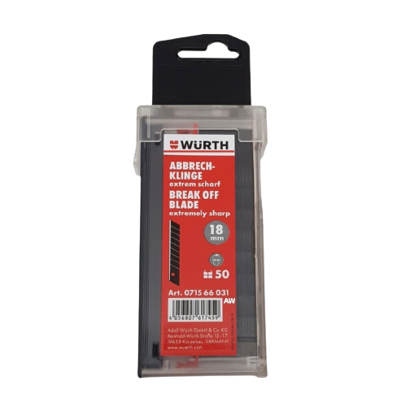
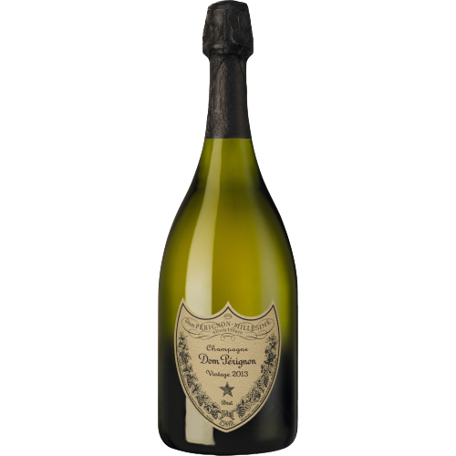

Unsere Angebote
Durchstöbern sie gerne unsere Angebote. Mit der Zeit werden weitere hinzukommen.
Würth 2K-Cutter-Messer mit Schieber | 18mm Klingenbreite | inkl. 3 Klingen
.png)
Cutter-Messer mit hochwertigem 2 Komponenten Griff, welcher besonders rutschfest und ergonomisch ist. Das Messer hat eine automatische Klingenarretierung. Klingenbreite: 18mm Klingenlänge: 100mm Gesamtlänge Messer: 170mm Lieferumfang: Cutter-Messer, 3x Abbrechklinge
Jetzt kaufen50 Stück Würth Cuttermesser 18mm Abbrechklingen extrem Scharf in der Spenderbox
Extrem scharf, für präzise Schnitte auch von feinen Streifen. Spitzer Schneidenwinkel und bester Stahl verleiht der Klinge eine extreme Schärfe. Ideal für Papier, Folien und dünne Materialien. Gleitet zügig und leicht durch das Material. Sichere Aufbewahrung. Praktische Spenderbox. Klingenbreite 18 mm Klingenlänge 110 mm Klingenstärke 0,5 mm Werkstoff Stahl Sehr hohe Standzeit
Jetzt kaufen2013 Champagne Dom Pérignon Brut, Champagne AC Moet & Chandon
Der 2013 Champagne Dom Pérignon Dom Pérignon ist exquisit. Sein vielschichtiges Bouquet entfaltet sich zunächst mit Noten von Guave und Grapefruit, welche sich mit Aromen von weißen Pfirsichen und Nektarinen verbinden. Diese werden durch Aromen von Vanille und leicht getoastetem Brioche abgerundet. Der Wein hat dank reifer Trauben mit tiefer Frucht viel Kraft und eine subtile Sinnlichkeit. Seine komplexen Aromen finden in einem langen Abgang zusammen: seidig, pikant mineralisch und fein.
Jetzt kaufenVideo-Dienstleistungen
Beschreibung der verschiedenen Video-Dienstleistungen der Firma Resifly
Foto-Dienstleistungen
Beschreibung der verschiedenen Foto-Dienstleistungen der Firma Resifly